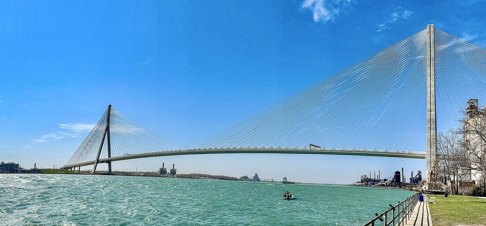

Image courtesy: TheWxResearcher;
Image sourced from: Wikimedia Commons;
Gordie Howe International Bridge in April 2026, connecting Windsor, Ontario, and Detroit, Michigan
(CCO 1.0 Universal TheWxResearcher; used under CC0 1.0 Universal Public Domain Dedication for educational/research-based explanation and illustrative purposes; unaltered).
The Longest Cable-Stayed Bridge in North America
The need for a new crossing under the over the Detroit River was first identified in the early 2000s through the binational traffic study by the Ministry of Transportation-Ontario (MTO), Transport Canada (TC), Michigan Department of Transportation (MDOT), and the U.S. Federal Highway Administration (FHWA) to examine the long-term transportation network needs of southeast Michigan and southwest Ontario, including improved highway connections between Highway 401 in Ontario and the interstate highway system in Michigan. The study concluded that the existing crossings between Windsor and Detroit would not adequately support projected trade/traffic growth in the coming decades.
Initiated in March 2002, the bi-national Border Transportation Partnership (a partnership of MTO, TC, MDOT, and the U.S. FHWA) conducted a ‘Planning/Needs and Feasibility (P/N&F) Study’ to assess the region's transportation needs and identify long-term solutions for cross-border traffic between Michigan and Ontario. To undertake this task, a binational consultation team led by URS Corporation (now AECOM) was hired. This consortium included URS Great Lakes as the Canadian lead consultant, The Corradino Group as the lead for the U.S. side, IBI Group as the specialized transit and transportation planner, and HLB Decision Economics for early-stage cost-benefit analysis.
Completed in January 2004, the final P/N&F study concluded that the existing border crossings would not be sufficient to meet projected traffic and goods-movement demand over the 30-year planning horizon—even with upgrades. It further highlighted that inaction would cost the nations over USD 100 billion in total losses by 2030. To address deficiencies in the existing infrastructure, the study recommended building a new crossing and a direct highway connection on both sides of the border. During these early stages in 2004, initial cost projections were often cited between CAD 1 billion (~USD 750 million) and CAD 2 billion (~USD 1.5 billion). However, these figures were somewhat misleading, as they primarily focused on the bridge structure itself while omitting the massive capital required for the customs plazas and extensive highway work.
The January 2005-amended Environment Overview Report of the P/N&F study introduced a jointly identified study area: Preliminary Analysis Area (PAA) in Canada and Area of Focus in the U.S.A. This 1,000+ square-kilometre area served as the study zone for crossing, plaza, and road-access alternatives. The report was subsequently used to initiate formal environmental assessments in Ontario, Canada; Michigan; and the United States, with coordination among the agencies under the bi-national partnership to meet the legislative and regulatory requirements.
After completing the ‘Planning/Need and Feasibility (P/N&F) Study’, the partnership launched a coordinated environmental review of the Detroit River International Crossing (DRIC), with continued oversight from URS and Corradino. They were supported by a team of specialized sub-consultants to address the region's unique geography and urban constraints:
Although carried out jointly, the assessment had to satisfy three different legislative frameworks, each with its own procedures:
Because of these separate legal requirements, the environmental study unfolded through three parallel processes that shared technical work, field studies, public consultations, and alternatives analysis. What differed was how each jurisdiction documented, approved, and formally evaluated the project under its own laws.
Ontario’s environmental assessment began on May 20, 2004, when the Ministry of Transportation Ontario submitted the draft Terms of Reference (TOR) to the Ontario Ministry of Environment under the Ontario Environmental Assessment Act (OEAA). The TOR set out the framework for the formal Environmental Assessment (EA). On September 17, the EA-TOR for the Detroit River International Crossing (DRIC) was approved by the Ontario Ministry of Environment.
In February 2005, as part of the coordinated bi-national study, Ontario began technical and environmental work in parallel with the federal CEAA and U.S. NEPA processes. By June, the partnership had developed several possible combinations — referred to as the "Illustrative Alternatives" — within the Preliminary Analysis Area (PAA), for potential river crossings, plaza locations, and roadway links. On the Canadian side, these combinations were built from:
Amongst these crossing options was the proposal to twin the existing Ambassador Bridge, listed as alternative “X12”. All early concepts were presented to the public during the first round of Public Information Open Houses (PIOH) in June 2005.
Following the technical review, the Canadian project team eliminated several alternatives. Options were removed from further consideration if they didn’t meet the partnership’s objectives or were deemed unsuitable when assessed against the seven factors outlined in the ‘May 2004 - Detroit River International Crossing Environmental Assessment Terms of Reference’.:
Because the DRIC study was conducted as a coordinated binational effort, the findings from the Ontario evaluations were shared with the U.S. study team to support a joint, comprehensive end-to-end review of the possible river crossings, inspection plazas, and access roads connecting Highway 401 in Ontario to the Interstate network in Michigan.
In November 2005, during PIOH #2, the Canadian project team, in coordination with its U.S. counterparts, established the Area of Continued Analysis (ACA). Inside this narrowed study zone, the team set out to distill a more focused set of ‘Practical Alternatives’, including:
In March 2006 (during PIOH #3), the DRIC study team identified the Canadian "Practical Alternatives" for further analysis. These consisted of:
In addition, planners examined five alternatives for a six-lane freeway connecting Highway 401 to the proposed plazas and ultimately to the new river crossing. These freeway options included:
The remainder of 2006 was devoted to an in-depth study of these options, with minor adjustments to alignment, design, and other aspects to minimize community, environmental, and cost impacts. These adjustments incorporated both public input and technical assumptions from prior meetings & open houses, as well as updated technical analyses.
By December 2006 (PIOH #4), the study team presented a preliminary analysis of these alternatives and updated the public on the progress of the ongoing environmental analysis. They also introduced paired plaza-crossing–plaza combinations, showing how each bridge alignment could connect to each feasible plaza location on both sides of the border. The team also invited public feedback not only on the options themselves but also on the evaluation methods and trade-offs being used.
The seven Canadian crossing-plaza combinations are listed below:
On-the-ground examinations of environmental, social, and technical conditions continued through the first half of 2007, accompanied by multiple public events and workshops to gather community feedback. During this period, both the study team and the residents showed growing interest in a parkway-style access road. The idea evolved into a “green corridor” concept — a refinement of the below-grade Alternatives 1B and 2B — featuring ten short tunnel sections ranging from 120 to 240 metres in length, a grade-separated recreational trail system, and extensive urban green landscaping. The goal of the “Parkway Alternatives” was to reconnect neighbourhoods on both sides of the road, creating new trails for pedestrians and cyclists, as well as wildlife linkages.
This concept was formally presented at PIOH #5 in August 2007 for public comment, and the study team was also keen to develop and evaluate this alternative to the same extent as the five initial options. During the open house, the remaining access road alternatives were deprioritized — though not eliminated — because they either incurred significantly higher capital costs or posed significant impacts. Additionally, five of the eleven bridge options for the proposed crossing alignments were presented, based on the findings of the ‘Bridge Type Study Report, Revision 2 - July 2007’, which evaluated the structural options for the main river span.
After the open house, the Canadian study team continued to assess various aspects of the corridor, including both the “Parkway Alternative” and the October 2007 “GreenLink Windsor” proposal. However, the Parkway remained the preferred choice among both planners and the community, as GreenLink was associated with higher costs.
At the same time, the follow-up ‘Bridge Conceptual Engineering Report, Revision 1 - February 2008’ reduced the number of feasible bridge design options to four: a cable-stayed and a suspension bridge for each remaining alignment. The possible crossing-plaza combinations were narrowed to three and later paired with U.S. plaza locations (reflecting the integrated Canada–U.S. evaluation process) to determine the preferred alternative for the single crossing-inspection plaza.
In May 2008, after detailed studies and refinements, The Windsor-Essex Parkway (the formal name of the “Parkway Alternative”) was selected as the “Technically and Environmentally Preferred Alternative” (TEPA) for the Ontario access road connecting Highway 401 to the new crossing. The following month, the Crossing X10(B) with Plaza B was identified as the TEPA for the crossing-plaza combination. Both decisions were presented to the public, agencies, municipalities, First Nations, and other interested parties for review at the sixth PIOH in June 2008, along with a full explanation of the evaluation and decision-making process.
By late 2008, the Recommended Plan was formed. Additional refinements were incorporated following further technical assessments and stakeholder consultations to enhance benefits and mitigate impacts. This updated plan was shared at the seventh and final PIOH.
The ‘Final Environmental Assessment Report - December 2008’ was submitted to the Ontario Ministry of the Environment (MOE) on December 31st, 2008, following public and stakeholder feedback on the draft. After releasing the report for further comment, the MOE completed its Ministry Review, taking into account public submissions, technical findings, and stakeholder responses. A ‘Notice of Completion’ for the Ministry Review was consecutively issued on April 24, 2009, followed by another public comment period.
Finally, on August 21, 2009, Ontario sanctioned the official environmental clearance, under the Ontario Environmental Assessment Act (OEAA), in coordination with the Canadian Environmental Assessment Act (CEAA) and the U.S. National Environmental Policy Act (NEPA), recalling the integrated binational nature of the DRIC study, and the vision for its outcome: the “Recommended Plan” (referred to as the “Technically and Environmentally Preferred Alternative” in the FEIA) that would serve as a continuous transnational portal into Canada and the United States.
In parallel with the Ontario Environmental Assessment (OEA), a federal screening under the Canadian Environmental Assessment Act (CEAA) was required. The DRIC project did not need a comprehensive study or review panel, as the assessment was coordinated under the ‘Canada-Ontario Agreement on Environmental Assessment Cooperation’. As a result, the CEAA study team could rely on the completed environmental work, technical findings, and proposed mitigation measures.
The federal screening process began in August 2005, when the Project Description was circulated to the federal authorities. This document outlined background information, the proposed location, and the major infrastructure components. Based on the Project Description and other information, Transport Canada (TC) was identified as the Lead Responsible Authority (LRA) At the same time, Fisheries and Oceans Canada (DFO) was also named the Responsible Authority (RA) because of potential impacts to fish habitat, and the Windsor Port Authority (WPA) was designated as the Prescribed Authority (PA). Additional expert federal agencies — Environment Canada, Health Canada, Foreign Affairs and International Trade Canada, and the Canada Border Services Agency — provided technical input to support the assessment. The next few steps were defining the scope of the project and the evaluation, with the ‘Federal Environmental Assessment Guidelines’ and the ‘Federal Public Participation Plan’ issued as guides.
The ‘Draft Canadian Environmental Assessment Act-Screening Report’ was released in July 2009 for public review and included previously completed environmental and technical studies.
By August, federal authorities had begun reviewing public feedback, assessing proposed mitigation measures, and preparing the final screening documentation.
Ultimately, on December 03, 2009, the Detroit River International Crossing received the ‘Notice of Decision’ under the Canadian Environmental Assessment Act, formally granting environmental clearance for the project, in coordination with the Ontario Environmental Assessment Act (OEAA) and the National Environmental Policy Act (NEPA).
In the United States, the environmental review was conducted in accordance with the National Environmental Policy Act (NEPA). The process formally began in March 2003, when the Federal Highway Administration (FHWA) published a ‘Notice of Intent’ in the Federal Register, announcing that an ‘Environmental Impact Statement’ (EIS) would be prepared.
Building on the findings of the binational ‘Planning/Needs and Feasibility (P/N&F) Study’ and parallel with the ‘Ontario Environmental Assessment Terms of Reference (TOR)’, the U.S. study team readied the ‘Draft Purpose and Need (P&N) Statement’ (issued March 2005; updated June 2005). The statement defined the region’s transportation concerns and the U.S. objectives.
Simultaneously, the bi-national partnership developed the “Preliminary Illustrative Alternatives” within the U.S. Area of Focus (equivalent to the Preliminary Analysis Area (PAA) in Canada). By June 2005, 51 U.S. combinations had been specified, representing initial options for potential river crossings, plaza sites, and road alignments. These early concepts were based on:
These initial concepts were later presented at the June 2005 Public Information Meeting and documented in the ‘Scoping Information’ report released in July 2005. This document furthermore outlined the environmental, resource, and community impacts.
In the ensuing months, the team continued to evaluate the initial options. Soon enough, the team reduced the number of crossing systems from 51 to 37 by eliminating the four “unique circumstances”, yielding a set of “Illustrative Alternatives”. The refined alternatives were formed by pairing:
With the refined set of options, the American project team continued to assess the remaining corridors based on the partnership’s objectives and the seven factors mutually agreed upon with the Canadian parties:
Based on these measures, alternatives that performed poorly were subsequently deprioritized.
Because the DRIC study was executed as a collaborative transnational effort, the U.S. evaluations were shared with the Ontario/Canadian side. Together, the two assessments supported a comprehensive, end-to-end review of potential river crossings, inspection plazas, and connectors linking the Interstate network in Michigan to Highway 401 in Ontario.
By November 2005, upon completion of the “Illustrative Alternatives” review, the U.S. analysis team, working closely with its Canadian partners, had identified an Area of Continued Analysis (ACA). Within this refined area, the team planned to assemble a smaller set of “Practical Alternatives” consisting of:
The progress made up to this stage was thereafter shown to the public and other stakeholders at the second Public Information Meeting in December.
After a period of additional public engagement events and thorough evaluations between late 2005 and early 2006, the study team established the preferred U.S. plaza zone. Multiple plaza layouts were then developed within this area, along with preliminary interchange configurations to connect each plaza to I-75. This resulted in the identification of 13 “Preliminary Practical Alternatives”.
Subsequently, these were introduced to community members and stakeholders, along with their preliminary impacts, during the third Public Information Meeting in March 2006.
The remainder of the year, the United States project team continued to advance on the on-the-ground environmental, technical, and social assessments, while hosting additional public workshops. By the December 2006 Public Informational Meeting, the findings of the comprehensive analyses and community input — particularly concerns stressed by the Delray community and the border protection agencies — led to considerations for initial screening/de-prioritization of several alternatives:
In early 2007, the analysis team held a “Value Analysis (VA)/Value Planning (VP)” workshop to examine, scrutinize and assess the alternatives (Value Analysis); and to speculate on revisions to these alternatives or suggest new interchanges (Value Planning). The workshop confirmed the elimination of concerning options highlighted by Delray and generated two new interchange concepts that were focused on mitigating neighbourhood impacts. The conceptual alternatives were:
These new additions were officially disclosed to the parties involved at Public Information Meeting #5 in March.
However, Alternative #15 was later dropped due to limited available space and the presence of an active rail line, which created both engineering challenges and local-access constraints.
Similarly, the General Services Administration (GSA), in combination with the U.S. Customs and Border Protection (CBP), analyzed each of the four proposed plaza sites. Based on their conclusion, all alternatives linked to Plaza P-b and Plaza P-d were rejected. The former was withdrawn because it bordered an operational railway line, raising security concerns. At the same time, the latter was dismissed due to its proximity to public infrastructure and its limited flexibility/expandability.
The screening outcomes were thereafter made public at the sixth Public Information Meeting in June 2007. During this meeting, another preliminary alternative was added to the ongoing study, with the Border Partnership's approval. This alternative was a hybrid model of the previously examined and discarded option, known as:
During the same period, technical work progressed on the ‘Bridge Type Study Report, Revision 2 - July 2007’. The paper explored and assessed different bridge types suitable for practical construction for the three horizontal alignments — Crossing X-10(A), Crossing X-10(B), and Crossing X-11(C) — for the main river span. The analysis initially identified eleven distinct bridge types, including cable-stayed and suspension bridges. By the conclusion of the report, this list had been reduced to five viable bridge types for further consideration. However, the study preferred to pursue Crossing X‑10(A) only if the other two crossings were eliminated.
Following the completion of the additional screening and the introduction of new options, the shortlisted choices were confirmed as the “Practical Alternatives”. These were later set out in the ‘Draft Environmental Impact Statement (DEIS) and Draft Section 4(f) Evaluation - February 2008’ for rigorous examination and comparison to select a “Preferred Alternative”. The ten candidate compositions were:
In parallel, the second phase of the engineering refinement — formally recorded in the ‘Bridge Conceptual Engineering Report, Revision 1 - February 2008’ — converged on four technically feasible bridge solutions — a cable-stayed and a suspension bridge for each of the two remaining lateral alignments. Moreover, the report recommended a cable-stayed bridge for both crossing alignments, primarily because it is estimated to cost less.
Upon issuance of the DEIS on February 25, 2008, the public, agencies, tribal bodies, and stakeholders were invited to comment on the adequacy of the analyses, assumptions, and alternatives published in the report. In tandem, a public hearing was held in March for the same purposes.
After the closure of the DEIS comment period in May 2008, the Federal Highway Administration (FHWA) and the Michigan Department of Transportation (MDOT) prepared responses to all substantive comments, clarified technical analyses, and refined impact assessments where needed.
For the next six months, the American project teams continued to scrutinize and evaluate the remaining corridor options. However, it is widely inferred from various sources that a preferred corridor solution had likely already been identified internally, though it had not yet been formally disclosed. By this time, the Canadian side had also announced its initial “Technically and Environmentally Preferred Alternative” (TEPA), which had been identified but still required successive adjustments, while the Canadian team. Throughout this phase, Canadian and U.S. teams remained closely coordinated, jointly contributing to each other’s ongoing international crossing-system analysis.
By December 2008, the U.S. analysis team had prepared the ‘Final Environmental Impact Statement (FEIS) and Final Section 4(f) Evaluation - December 2008’. This crucial document officially declared the final “Preferred Alternative” — Crossing X-10(B; cable-stayed or suspension bridge)/refined Plaza P-a/refined Hybrid Interchange — selected based on environmental, social, and economic outcomes. In particular, the updated Hybrid Alternative combined the most effective elements of Interchanges A, B, and I—such as local access ramps, pedestrian crossings, and vehicular crossings—and integrated them to best meet engineering standards, site constraints, and public feedback.
Furthermore, the FIES documented the analysis undertaken to designate the optimal crossing, inspection plaza, and interchange corridor, drawing on data from the DEIS and comparable Canadian documentation. As noted previously, his decision represented a fully integrated, end‑to‑end binational effort between the United States and Canada.
At long last, the FHWA issued the ‘Record of Decision (ROD)’ on January 14, 2009. This document served as the official federal decision under NEPA, granting environmental clearance for the development of the Detroit River International Crossing, with the “Selected Alternative” (referred to as the “Preferred Alternative” in the FEIS) envisioned as a seamless gateway between the United States and Canada.
Despite the environmental approvals sanctioned by Ontario, Canada, and the United States of America, and the passage of authorizing legislation in the Michigan House of Representatives in May 2010, the Michigan Senate had not yet authorized the essential enabling legislation to allow the state to participate in the construction and financing of the Detroit River International Crossing (DRIC), creating an important political hurdle that persisted throughout 2010 and 2011.
Focusing on the key players, the anti-bridge coalition included Manuel “Matty” Moroun, the owner of the Ambassador Bridge; conservative Republicans in the Michigan Legislature who went against their own Governor, Rick Snyder; and Americans for Prosperity. They argued that a government-owned bridge would use taxpayer-subsidized tolls to drive a private business (the Ambassador Bridge) out of existence; Michigan would eventually be stuck with maintenance costs or liability if toll revenues fell short, despite Canada’s offer; and that the Morouns had "exclusivity" to operate a bridge in that corridor.
The pro-bridge party was led by Republican Governor Rick Snyder and his supporters, including Stephen Harper, then-Prime Minister of Canada; the leaders of the “Big Three” automakers (GM, Ford, Chrysler); and most Michigan Democrats. They reasoned that Michigan’s economy depended on the "Just-in-Time" delivery of auto parts, and that a single point of failure, the Ambassador Bridge, was a national security risk; and a direct highway-to-highway connection would remove thousands of trucks from local streets. The Canadian government even offered to pay Michigan’s share of the project cost — USD 550 million (~CAD 550 million) — to ensure Michigan taxpayers paid $0.
Regardless, in October 2011, the Senate Economic Development Committee voted against forwarding ‘Senate Bills 410 and 411’ — the necessary legislation to authorize the bridge — to a full Senate vote and rejected Canada’s funding offer, raising a doubt on the Michigan Department of Transportation (MDOT)’s tentatively scheduled deadline for bridge completion of 2016.
Yet, even with the legislative defeat, Snyder bypassed the legislation and sought to pursue an agreement with Canada through ‘The Urban Cooperation Act of 1967’. This led to the official signing of the ‘Crossing Agreement’ on June 12, 2012, between Canada and Michigan.
Under the agreement, Canada took responsibility for constructing, financing, and operating the new crossing through a public-private partnership (PPP). This meant Canada would cover 100% of the project costs, including the land acquisition, the bridge itself, the Canadian Port of Entry, and the massive I-75 interchange in Detroit, with recoupment later through toll revenue. Additionally, the agreement specified that Canada and Michigan would jointly own the crossing. Furthermore, it outlined the blueprint for establishing a crossing authority responsible for the crossing's delivery and operation, along with the International Authority (IA). The IA, composed of six members with equal representation from Canada and Michigan, would oversee and approve key steps in the PPP procurement process and ensure compliance with the Agreement. The agreement also required that all iron and steel for any bridge component in Canada and for any project component in the United States be sourced from either Canada or the United States. The understanding also included community benefits for residents on both sides of the Detroit River, including improvements to local neighbourhoods affected by bridge construction.
By October 2012, following the issuance of the ‘Letters Patent’ under the ‘Canadian International Bridges and Tunnels Act’, the Windsor-Detroit Bridge Authority (WDBA) was legally formed.
Nevertheless, Moroun remained determined to block DRIC's funding and construction. Therefore, he financed “Proposal 6”, officially titled the "International Bridge Voting Amendment," which was a 2012 ballot initiative that sought to amend the Michigan Constitution to require a statewide popular vote before any state funds could be spent on a new international bridge or tunnel for motor vehicles.
On November 6, 2012, however, the amendment was decisively defeated, with 60% of voters casting a "No" ballot. The rejection of Proposal 6 was the final political nail in the coffin for the opposition, and gave Governor Snyder the public support and political mandate to proceed with the ‘Crossing Agreement’ without fear of further popular interference.
Following a 10-month review of the bilateral agreement, on April 12, 2013, the U.S. Department of State (DOS) issued the ‘Presidential Permit’ — signed by then-President Barack Obama — for the “construction, connection, operation, and maintenance” of the new publicly owned transnational bridge linking Windsor and Detroit. It formally declared that the bridge was in the U.S. National Interest, citing job creation, trade efficiency, and border security.
In May 2014 (May 2013 as per Transport Canada), the U.S. Coast Guard (USCG) issued a bridge permit. Since the bridge would cross a navigable waterway, the Detroit River, the Coast Guard had to approve the bridge’s navigational clearance to ensure lake freighters could pass underneath safely.
Similarly, construction was well underway on the Windsor-Essex Parkway, formally the Rt. Hon. Herb Gray Parkway, with Windsor-Essex Mobility Group (WEMG) — a consortium of ACS Infrastructure Canada Inc., Acciona Concessions Canada, Fluor Canada Limited — selected to design, build, finance, and maintain the Parkway.
On July 30, 2014, the Windsor-Detroit Bridge Authority (WDBA) officially began operations with the appointment of its Board of Directors. Established as a Canadian Crown corporation, the WDBA took over governance and management of the project from the Border Transportation Partnership, assuming responsibility for the design, construction, operation and maintenance of the crossing. Concurrently, Canadian and Michigan representatives were appointed to the bi-national International Authority (IA) to oversee the procurement process and compliance.
The following year, on May 14, 2015, then-Canadian Prime Minister Stephen Harper and then-Michigan Governor Rick Snyder announced that the Detroit River International Crossing (DRIC) would officially be named the Gordie Howe International Bridge (GHIB), honouring the legendary Canadian hockey player, who led the Detroit Red Wings to four Stanley Cup victories.
As the project moved into this operational phase, the financial reality of the binational agreement became clearer. By 2016, the project estimate jumped to CAD 4.8 billion (~USD 3.4 billion). This significant increase was primarily driven by the Canadian dollar crashing against the U.S. dollar; because the Crossing Agreement required Canada to pay for the American side of the project in U.S. currency, the fluctuating exchange rate made the procurement of U.S. land and infrastructure considerably more expensive.
Building on the environmental foundations, the project entered formal procurement in 2015. The Windsor-Detroit Bridge Authority launched the Request for Qualification (RFQ) on July 20, 2015, marking the first stage in the procurement process to select a private-sector partner under a Design, Build, Finance, Operate and Maintain (DBFOM) model. This document not only initiated the search for a private partner but also established the project’s technical baseline.
The Main Bridge was required as a six-lane crossing with a total length of approximately 2.5 kilometres and a clear span of 850 metres, including a 3.6-metre-wide multi-use path. The Michigan Interchange was specified to include four long bridges crossing the railway and connecting I-75 to the US POE, as well as nine new bridges — four for road traffic and five for pedestrians — to maintain neighbourhood connectivity over I-75. Furthermore, the footprints for the Ports of Entry (POE) were defined, with the Canadian POE set at 130 acres—destined to be the largest on the border—and the U.S. POE at approximately 167 acres. These 2015 specifications served as the mandatory base for all subsequent bids during the RFP process.
To manage this high-stakes process, the WDBA appointed Parsons Corporation as the General Engineering Consultant (GEC). Acting as the technical architect, Parsons was responsible for drafting thousands of pages of technical specifications and managing the selection of a private partner. A suite of strategic advisors supported this effort, including Deloitte (financial/transaction), Blair Franklin Asset Management (capital markets), Fasken Martineau and Warner Norcross & Judd LLP (legal counsel), and p1 Consulting, which served as the independent fairness monitor to ensure the process remained transparent.
Later that year, in October, the Authority announced that six different North American and international firms had submitted their qualifications for the project. These submissions underwent rigorous analysis by the WDBA team in several key areas: respondent team and approach to partnering; design; construction (including administering sub-contracts and making timely payments to sub-contractors); operation and maintenance; tolling; and financial and financing information.
On January 20, 2016, following the evaluation, which was overseen by an independent fairness monitor — who concluded that the evaluation was open, fair, and transparent — WDBA announced the three shortlisted consortia that would move on to the final bidding round:
By November 2016, WDBA issued the Request for Proposals (RFP) to the three qualified groups. They were granted 18 months to prepare their formal, highly detailed submissions, initiating the second and final stage of the procurement process.
On July 5, 2018, following a comprehensive and monitored selection process, the Bridge Authority announced Bridging North America (BNA) as the Preferred Proponent for the project. BNA’s proposal distinguished itself with an elegant cable-stayed bridge featuring an 853-metre clear span between its two ~220-metre-tall A-shaped towers. Inspired by the curvature of a hockey stick in a slap shot, the design perfectly reflected Gordie Howe and his legacy. Upon completion, it would be the longest cable-stayed bridge in North America.
Following further due diligence, the project reached Financial Close on September 28, 2018, officially concluding the procurement phase. The fixed-price contract, valued at CAD 5.7 billion (~USD 4.4 billion) — CAD 3.8 billion (~USD 2.9 billion) for design, build, and finance; and CAD 1.9 billion (~USD 1.5 billion) for operation, maintenance, and finance — established a comprehensive 36-year partnership between the WDBA and Bridging North America. This agreement includes a six-year construction period (initially slated for 74 months) followed by a 30-year operation and maintenance period, during which BNA remains responsible for the bridge’s upkeep and functionality. At the time of signing, the crossing was expected to be in service by the end of 2024.
While the procurement process was determining who would build the bridge, extensive groundwork was already underway on both sides of the border to prepare the physical sites.
By the time WDBA became operational in 2014, the majority of the land required for the Windsor footprint had already been acquired — most notably a 94-acre parcel purchased by Transport Canada from the City of Windsor in July 2009 for CAD 38 million (~USD 33 million).
Initial site clearing focused heavily on environmental mitigation. Crews relocated Species at Risk (SAR) fauna, including the Butler’s Gartersnake and the Eastern Foxsnake, as well as at-risk flora like the Dense Blazing Star and the Willowleaf Aster. Black geotextile fabric fencing, also known as exclusion fencing, was installed to limit wildlife access to the site. The work also involved removing over 900 metric tons of historic waste and clearing more than 3,100 trees and shrubs across roughly 100 acres by January 2015.
In September 2015, the first major physical construction phase began when Amico Infrastructures Inc. was awarded a CAD 59 million (~USD 45 million) contract to carry out Phase 1 of the Canadian POE “Early Works.” The scope comprised:
Additionally, a new 4.3-kilometre-long high-pressure natural gas pipeline that supplies two local power-generating stations was installed as part of a separate CAD 8.4 million (~USD 6.5 million) project involving Union Gas Ltd. These works, Phase 1 “Early Works,” were substantially completed by early 2017, though the perimeter access road officially opened to traffic later in December 2019.
Beginning in early 2017, Phase 2 of the “Early Work” launched with three contracts totalling CAD 86 million (~USD 66 million). These focused primarily on relocating the Hydro One power corridor that supports Ontario’s grid. Contracts were awarded to: Prysmian Cables and Systems Canada L†d. for high voltage cabling and accessories; Valard Construction LP for transmission line relocations; and AMS, a joint venture of Amico Infrastructures Inc. and Mid-South Contractors Ltd., for distribution line relocation. These complex utility relocations continued through 2018 and officially concluded in 2019.
Across the river, the Michigan Department of Transportation (MDOT) and WDBA began official land acquisition for the 167-acre Detroit site in June 2015, following approvals from the International Authority (IA). Canada’s previous commitment to fully fund the entire USD 250 million (~CAD 315 million) U.S. POE construction removed the final financial hurdle, allowing the acquisition of approximately 636 individual parcels — including 211 residential, 36 business, and 5 church properties. In order to accelerate the procurement, the City of Detroit launched the "Bridging Neighbourhoods Home Swap" Program, allowing residents within the bridge footprint to swap their homes for renovated Land Bank properties in other neighbourhoods rather than taking a cash payout.
As parcels were acquired, a preliminary site investigation (PSI) and soil sampling were conducted. Crews then began systematic demolition and earthmoving: filling in basements, ripping out old industrial concrete pads, and removing contaminated soil. Simultaneously, utility companies — including DTE Energy, DTE Gas, International Transmission Company (ITC), Detroit Water and Sewerage Department (DWSD), Great Lakes Water Authority (GLWA), AT&T, Sprint/Nextel, and Comcast — were brought to the site to relocate electricity lines, gas mains, water and sewer systems, and telecommunication cables.
A critical milestone occurred between August 2017 and early 2018, when MDOT and its utility partners executed a highly complex sewer relocation phase beneath I-75. Crews successfully installed eight massive sewer crossings deep underground, protecting them beneath the highway pavement. This "head-start" effectively cleared the path for the future foundations and provided the necessary depth for the complex inverted siphons that the bridge contractor would later build. Following this, in March 2018, with 95% of the land acquired and more than 200 structures demolished, contractors rapidly cleared over 4,000 trees across the footprint in just ten weeks.
While all these preparatory works were progressing, WDBA and BNA signed a separate Early Works Agreement on July 17, 2018. This agreement allowed BNA to immediately commence advance construction at the US project sites, including at the bridge piers, on the lands that became the US POE, and at the Michigan interchange, including:
The Michigan Advance Construction phase allowed the Preferred Proponent to take advantage of the summer 2018 construction season while the regular site preparatory works continued, and enabled full construction to begin after the financial close was achieved in late September.
Finally, after nearly two decades of planning, land acquisition, and site preparation, the Windsor-Detroit Bridge Authority and Bridging North America — in the presence of then-Canadian Prime Minister Justin Trudeau, then-Canadian Minister of Infrastructure and Communities François-Philippe Champagne, then-Michigan Governor Rick Snyder, and many other honourable guests and supporters of the project — celebrated the official ground-breaking of the CAD 5.7 billion (~USD 4.4 billion) Gordie Howe International Bridge project on October 5, 2018.
This milestone sparked a transition for Parsons Corporation, which moved from its GEC role into the position of Owner’s Engineer (OE) under a CAD 61 million (~USD 46 million) contract. In this capacity, Parsons acts as the primary technical representative for the WDBA, overseeing BNA’s performance to ensure every structural element meets the strict safety and quality standards defined in the Project Agreement. This transition marked the final move from site readiness into the main construction phase, with the bridge then expected to enter service by late 2024.
In 2009, the Detroit International Bridge Company (DIBC) and Canadian Transit Company (CTC) — the owners/operators of the Ambassador Bridge — initiated legal actions against the Detroit River International Crossing (DRIC), alleging institutional favouritism against their bridge, an overstated need for additional border infrastructure, and inadequate consideration in the Environmental Impact Assessment/Environmental Impact Statement. These moves formed part of a broader strategy to delay implementation of the new international corridor, driven by the concern that a publicly-funded border crossing would divert traffic (particularly commercial vehicle traffic) from their own bridge.
Specifically, in May 2009, DIBC filed a lawsuit in the U.S. District Court for the Eastern District of Michigan, questioning the ‘Record of Decision (ROD)’, claiming that the approval was “arbitrary and capricious” and overly influenced by Canadian interests. The company further noted that Canada failed to fulfill its 2003 commitment to invest CAD 300 million to connect Highway 401 to the Ambassador Bridge.
Nevertheless, on April 5, 2012, Judge Cohn dismissed the case based on several findings. The judge held that the ROD was supported by an extensive analysis of all practical alternatives and competing interests, which informed the selection of the preferred alternative. Regarding the proposed Ambassador Bridge Second Span (option “X12”), the court found that it had been rejected for legitimate reasons—such as neighbourhood impacts and lack of connectivity—which likewise justified eliminating other alternatives. Besides, Judge Cohn explicitly noted that if DIBC wanted to contest Canada’s reasons for eliminating the concerned option, it would need to pursue that challenge in Canadian courts rather than in a U.S. federal court
Correspondingly, the CTC, on December 31, 2009, brought a case in the Federal Court of Canada, contesting the environmental assessment on the grounds of bias — claiming that the option to extend Highway 401 to the twin Ambassador Bridge (option “X12”) was improperly dropped for non-legitimate reasons — and insufficient evaluation of adverse ecological consequences.
In a decision issued on May 4, 2011, Justice Kelen of the Federal Court of Canada dismissed CTC’s application, finding the DRIC EIA to be reasonable and rational. The judge concluded that the exclusion of option “X12” was justified by valid environmental and social factors (e.g., neighbourhood impacts) and by the severe disruptions that would occur during construction. Yet CTC appealed the decision to the Federal Court of Appeal, which also dismissed the appeal in March 2012.
On March 22, 2010, Detroit International Bridge Company (DIBC), together with its wholly-owned subsidiary, the Canadian Transit Company (CTC), filed a federal lawsuit in the U.S. District Court for the District of Columbia against the Government of Canada and various U.S. federal agencies, including the U.S. Department of Transportation (USDOT), Federal Highway Administration (FHWA), U.S. Coast Guard (USCG), and Department of Homeland Security (DHS). The complainants alleged that actions taken by these governments to advance the Detroit River International Crossing threatened the economic viability of the self-owned Ambassador Bridge and its plans for a Twin Span. The complaint sought declaratory and injunctive relief, arguing that government conduct deprived DIBC of its right to build and operate a competitive crossing.
In June 2011, DIBC & CTC filed a ‘First Amended Complaint’, expanding their original claims against Canada and the U.S. agencies. However, in November 2011, they voluntarily dismissed their case against the Government of Canada and several U.S. defendants without prejudice, meaning they retained the right to refile at a later date. The Government of Canada opposed this dismissal, but the court allowed the case to be withdrawn.
After a hiatus, the plaintiffs refiled the case and brought Canada back in as a defendant in November 2012. They formally submitted a ‘Second Amended Complaint’ in February 2013, focusing more squarely on Canada’s role in advancing the DRIC project.
By May 2013, the litigants had filed a ‘Third Amended Complaint’, again asserting that government actions tied to the proposed new crossing interfered with their rights and business interests. The amendment broadened the number of defendants to include the U.S. Department of State (DOS), the Secretary of State, the NITC/DRIC Partnership, the Administrator of FHWA, the Windsor-Detroit Bridge Authority (WDBA), and the Commandant of USCG, and set out eight distinct causes of action, including constitutional claims, statutory challenges under the ‘Administrative Procedure Act (APA)’, and requests for declaratory relief regarding alleged rights and government conduct.
Throughout 2014, the case proceeded through extensive motion practice and court rulings. In May 2014, the court issued significant opinions addressing procedural issues and the legal viability of the plaintiffs’ claims, setting the stage for further narrowing of the case
In January 2015, the U.S. District Court paused part of the lawsuit because one of the core legal issues — whether DIBC/CTC had exclusive franchise rights under Canadian law — was already being litigated in a separate Canadian court.
In September 2015, Judge Rosemary M. Collyer issued a major ruling dismissing seven of the eight claims in the plaintiffs’ ‘Third Amended Complaint’, significantly narrowing the scope of the case. The court found that many of DIBC and CTC’s allegations failed to state a claim upon which relief could be granted, reflecting judicial skepticism about the underlying legal theories that government actions had unlawfully interfered with the Ambassador Bridge franchise or related rights.
Additional opinions in 2016 — including rulings on reconsideration of earlier orders — reaffirmed the dismissal of several counts. By mid-2016, much of the litigation had been narrowed to a handful of remaining issues, with the court addressing motions and clarifying which aspects of the case could proceed.
After the district court’s decisions, the plaintiffs appealed the remaining claims to the U.S. Court of Appeals for the D.C. Circuit, seeking review of the dismissal of several key counts. In November 2017, however, the appellate court ultimately upheld the lower court’s rulings. When the plaintiffs sought a rehearing, the court denied it, effectively ending the appeal and confirming that the lawsuit could not block the Detroit River International Crossing/Gordie Howe International Bridge (GHIB) project on the grounds they had advanced.
In parallel with the ‘Washington Litigation’, in January 2010, DIBC (on behalf of both itself and CTC) served its first ‘Notice of Intent’ to submit a claim, under the ‘North American Free Trade Agreement (NAFTA) - Chapter 11’, against the Government of Canada. This notice formally declared DIBC's intention to pursue an investment dispute under NAFTA regarding Canada’s decisions on the DRIC project and associated infrastructure measures. Not too long after, the company followed up with a second ‘Notice of Intent’, reinforcing its commitment to arbitrate under the Free Trade Agreement (FTA).
On April 29, 2011, DIBC formally initiated the NAFTA Arbitration by filing its first ‘Notice of Arbitration (NOA)’ pursuant to the United Nations Commission on International Trade Law (UNCITRAL) Arbitration Rules administered by the Permanent Court of Arbitration (PCA). The arbitration notice stated the claimant’s core claims — that Canada’s actions relating to the location and planning of the “Windsor-Essex Parkway”, highway access, and measures directing traffic toward other crossings allegedly disfavoured the existing Ambassador Bridge and that Canada violated NAFTA protections like national treatment, most-favoured-nation treatment, and minimum standard of treatment.
As part of the initiation of the arbitration requirements, DIBC submitted its ‘First NAFTA Waiver’ under ‘Article 1121’ of the FTA—a formal document confirming that it wouldn’t pursue domestic claims based on the same underlying measures in other courts. The waiver, however, explicitly carved out the existing ‘Washington Litigation’, allowing Canada to argue that the waiver was not consistent with ‘NAFTA Article 1121’ because it didn’t cover all relevant domestic claims. In the period that followed, Canada formally communicated its objections that the conditions precedent to arbitration — including the waiver conditions under Article 1121 — were not met and that Canada therefore did not consent to arbitration under those terms.
Over the next year, the arbitral tribunal was formally constituted, and the procedural groundwork was laid following the issuance of the ‘Procedural Order No. 1’ in Dec 2012. Subsequently, the arbitration panel issued early orders to verify that the arbitrators were properly appointed, to determine the hearing location, and to outline the procedure for proceeding with the case.
With the dawn of the new year, DIBC filed an ‘Amended Notice of Arbitration (NOA)’ on January 15, 2013, which refined and expanded its claims. The expanded claims included Canada’s alleged violation of DIBC’s “exclusive franchise rights,” the delayed/denied approval of DIBC’s own proposed “New Span” adjacent to the Ambassador Bridge, and continued discrimination against building the DRIC.
Along with the amended NOA, a ‘Second NAFTA Waiver’ was also submitted in part to address the jurisdictional concerns raised by Canada regarding compliance with NAFTA’s arbitration prerequisites. Still, the claimants continued to carve out the ‘Washington Litigation’ and the parallel ‘CTC vs Canada Litigation’. Furthermore, Canada stated that the new waiver was even less consistent with NAFTA’s strict requirements.
Shortly after the amendment, on January 31, DIBC submitted its ‘Statement of Claim’. The document sets out in detail the legal basis, allegations, and supporting evidence underlying DIBC’s NAFTA claim against Canada. In response, Canada filed its ‘Statement of Jurisdiction and Admissibility’, outlining the main reasons it believes the tribunal lacks jurisdiction, namely DIBC’s failure to meet NAFTA procedural prerequisites. Throughout the remainder of 2013 and early 2014, the parties continued their written exchanges with the Memorial, Counter-Memorial, Reply Memorial, and Rejoinder Memorial being filed consecutively.
On 2 April 2015, after extensive written pleadings, procedural exchanges, and interpretive submissions from the United States and Mexico, the tribunal issued a jurisdictional award dismissing DIBC’s lawsuit, finding that it lacked authority to hear the case because it failed to comply with NAFTA’s waiver requirements. A separate costs award was issued in August 2015, requiring DIBC to cover approximately CAD 1.98 million (USD 1.52 million) of Canada’s costs. As a result, the arbitration ended without a ruling on whether Canada had breached NAFTA’s substantive protections.
The architectural vision for the Gordie Howe International Bridge was solidified during the procurement phase. Bridging North America (BNA) proposed an elegant cable-stayed bridge featuring an 853-metre clear span — the longest in North America — supported by two 220-metre-tall A-shaped towers. These towers, inspired by the curvature of a hockey stick, were designed not only for aesthetics but for extreme resilience.
As design teams finalized structural blueprints, a pivotal inclusion was the Multi-Use Path (MUP). This 3.6-kilometre toll-free path was engineered to run along the east side of the bridge, providing a 3-metre-wide dedicated lane for pedestrians and cyclists, and providing connections to the trail networks in both Canada and U.S.A. Simultaneously, comprehensive wind tunnel testing verified their aerodynamic stability and evaluated stay dampers and lock-up devices (LUDs) under extreme wind conditions. By early 2019, structural engineering for the massive foundation footings and the 140-metre lower pylon legs was finalized, allowing crews to begin the first concrete pours for the tower foundations. This year also marked the launch of the Visual Art Program, ensuring the bridge would serve as a cultural landmark through a programmable LED "Aesthetic Lighting" system capable of displaying millions of colours across the cables and pylons.
On the ground, BNA's architectural teams (including Moriyama & Teshima and Smith-Miller + Hawkinson) finalized the blueprints for the 130-acre Canadian and 167-acre U.S. Ports of Entry (POE). Designed to function as a unified "cross-border campus," the final architectural vision featured expansive, sweeping canopy structures and extensive use of glass, wood, and concrete to maximize natural light and visual flow. The blueprints across all 24 support buildings prioritized high-performance sustainability, targeting LEED v4 Silver and Gold certifications through the integration of massive green roofs and energy-efficient climate systems. The Windsor-Detroit Bridge Authority (WDBA) also sought public input for the Jefferson Wall — an 8-foot-high, non-climbable security wall, bordering the landscaped perimeter at the US POE. The following design options were explored:
Following the October 2018 groundbreaking, the project entered a heavy preparatory phase. Crews finalized land acquisition and site clearing for the remaining 4–5% of required land in Detroit. Simultaneously, a massive geotechnical program involving over 1,000 samples began to verify soil conditions and inform foundation designs. In Windsor, work progressed on utility relocations and the Perimeter Access Road (PAR).
Early in the year, engineers initiated a critical test pile program to ensure bedrock integrity. This involved installing four full-size, 3-metre-diameter test shafts embedded 6 metres into the bedrock. Crews used Osterberg Cells (O-cells)—specialized hydraulic jacks—at the base to apply immense pressure and measure load resistance, proving the bedrock could handle the enormous weight of the 220-metre towers.
Meanwhile, because the massive U.S. bridge tower sits adjacent to the Detroit River, the aging shoreline infrastructure was simply not robust enough to withstand the load of the tower. Therefore, the U.S. seawall required a total overhaul. By summer 2019, engineers had performed extensive seawall investigations, and workers had begun driving new, high-strength steel sheet piles deep into the riverbed and bank to create a resilient, watertight barrier. Behind the new seawall, marine construction crews then excavated decades of industrial debris and unstable soil, and installed a water-treatment system to process contaminated groundwater.
By March, construction teams began installing the wick drains on the Canadian POE to stabilize and consolidate the swampy soil, followed by surcharge fill in November. Across the border, site prep work (fencing, clearing, and grubbing) began in May 2019, with wick drain and advanced fill placement commencing in November 2019, for the Phase One area of the U.S. POE.
As for the Michigan Interchange, Phase One activities launched in the fall of 2019, involving:
By year-end, several foundational elements reached critical milestones. These included the completion of the PAR in Windsor, the Hydro One utility relocation, and modifications to the U.S. seawall, while work on the sewer crossings & siphon chambers continued. In Detroit, crews successfully demolished existing infrastructure over I-75 in December to make way for the new interchange. Simultaneously, following the completion of test shafts, teams transitioned to drilling the permanent production shafts. These shafts, measuring 3 metres wide and up to 36 metres deep, formed the bridge's main support system; by year-end, 11 of these shafts had been poured—10 in Canada and one in the U.S.
On June 13, 2019, the official Community Benefits Plan was announced, featuring a core CAD 20 million (~USD 15 million) fund. The plan was structured around two pillars: a Workforce Development Strategy and a Neighbourhood Infrastructure Strategy. The Workforce Development Strategy focused on:
The Neighbourhood Infrastructure Strategy allocated CAD 20 million (~USD 15 million) in direct investment on both sides of the border. Initially, funding was provided to 29 specific projects in the host communities of Sandwich (Windsor) and Delray (Detroit). Some highlights of the plan included:
The plan included the USD 5 million (~CAD 6.8 million) Southwest Detroit Roadway Improvements strategy, designed to proactively enhance the neighbourhood fabric of Delray and its surrounding areas, including repaving miles of local city streets, upgrading ADA ramps, and installing new, brighter street lighting to improve safety in the Delray neighbourhood surrounding the U.S. POE. This initiative focused on the streets that residents use most, such as West Vernor Highway, Clark Street, and Military Street. Community Offices were opened, and the first Artist Commissioning process was conceptualized to ensure local creative voices were represented in the project’s permanent architecture.
Despite the COVID-19 pandemic, the project maintained a steady pace, moving from underground drilling to visible structural footings.
In January 2020, Governor Gretchen Whitmer and the WDBA announced the final design for five new pedestrian bridges over I-75 (Solvay, Beard, Waterman, Junction, and Lansing streets). Following a public vote, a design featuring curved steel arches with integrated LED lighting was selected, ensuring neighbourhood connectivity mirrored the main bridge’s aesthetic
By mid-2020, as tower foundations took shape in the riverbed, engineering blueprints for the "transition area" (where the pylon legs meet) and the composite steel-and-concrete bridge deck were approved for manufacturing. Meanwhile, high-level concepts for the three-kilometre-long Sandwich Street Reconstruction were presented to the City of Windsor, initiating a localized design phase to incorporate bike lanes and enhanced streetscaping. Fully funded by the Gordie Howe International Bridge project, this massive undertaking aimed to overhaul three kilometres of historic roadway from the Canadian POE at McKee Avenue down to the Rosedale Avenue roundabout.
By summer, all 36 production shafts (18 per side) were completed. Following this, the bridge foundations began to emerge from the ground as crews started forming the tower footings. Notably, on July 1, 2020, Canada celebrated a major milestone with the first massive concrete pour for the tower footing, utilizing 1,910 cubic metres of concrete.
By December, exactly six months after the first pour, the final bit of concrete for the tower footings was placed, requiring an astonishing 7,600 cubic metres of concrete in total. In parallel, construction of the footings for the bridge-side span and anchor piers was ongoing on both the Canadian and US bridge sites. With this underground and base-level work officially completed, the tower legs were ready to begin their rapid vertical ascent.
To facilitate the vertical climb, two massive, self-climbing tower cranes were installed. A red crane was installed on the Canadian side, and a blue crane on the U.S. side. These cranes utilized a customized jump form system — enclosed steel galleries that allowed workers to build the towers upward in 15-foot increments. Additionally, two smaller mobile crawler cranes were installed.
By September 2020, installation of a total of 133,000 wick drains at the Canadian POE site was complete, and more than 634,000 metric tonnes of engineered fill and surcharge were placed in a phased approach to compress the soil. By late 2020, the settlement period for Phase One ended, and the surcharge material was moved to other areas for reuse. In the U.S., clearing and grubbing were finalized across all three phases, and more than 550,000 metric tonnes of engineered fill were placed to begin the long settlement period.
Throughout 2020, construction within the Michigan Interchange centred on Phase 1 activities, maintaining steady progress despite the challenges of the global pandemic. Efforts were primarily focused on the reconstruction of the Springwells Street, Livernois Avenue, and Clark Street road bridges, where crews moved from deep foundation work to the formation of new concrete piers and abutments. Simultaneously, heavy civil work continued along the I-75 mainline, including widening highway shoulders and reconstructing pavement segments between Springwells Street and Green Street. Preparation of the adjacent service drives also intensified, involving significant utility relocation and grading to accommodate the future ramps that would eventually connect the interstate directly to the U.S. Port of Entry.
Despite pandemic-related challenges, the project hosted its first Community Organization Investment (COI) Open House in January. By March, the first annual CAD 100,000 (~USD 74,000) envelope, under the five-year-long program, was released to support local programming, events, and small infrastructure improvements. By July, over CAD 475,000 (~USD 350,000) had been distributed toward initial Community Benefits initiatives on both sides of the border.
2021 saw the bridge towers claim their place in the skyline while the Ports of Entry facilities began their vertical construction.
By late 2021, the detailed design and structural engineering for the entire project reached substantial completion. This milestone provided the technical green light necessary to transition from foundational groundwork to aggressive vertical construction.
During this phase, engineers finalized the bridge’s core structural blueprints, including the complex geometry of the pylon heads, the stay-cable anchorages, and the intricate internal reinforcement for the massive main span.
Concurrently, structural engineering for all 24 buildings across both Ports of Entry was concluded. Notably, 2021 saw the official launch of the Visual Art Program’s artist selection. Five major art commissions were finalized to create permanent installations at the POEs, including works that celebrate the History of the Underground Railroad, Indigenous Culture (in partnership with Walpole Island and Caldwell First Nations), and the Industrial Heritage of both cities. Simultaneously, teams finalized the project's aesthetics and landscaping plans, which include the planting of over 3,000 trees. A unique highlight was the finalization of the Jefferson Wall design; inspired by the iconic historic Fort Wayne, the selected pattern mimics the fort’s unique starlike silhouette through complex concrete textures.
This period also marked the completion of specialized engineering for the Michigan Interchange, ensuring that the new ramps and five pedestrian overpasses would integrate seamlessly with the existing interstate and the new international gateway.
With footings completed, work began on the 140-metre-tall lower pylons that account for roughly the first two-thirds of the full tower height. Each leg was composed of 29 segments, each requiring 110 cubic metres of concrete and 50 tonnes of rebar, with crews "jumping" the forms vertically every few weeks. By summer, a temporary walkway connected the two legs 40 metres above the ground, rising alongside the jump forms. By year-end, the tower had reached over 100 metres. To support this growth, temporary struts and brackets (corbels) were installed to prepare for future deck construction.
In the Canadian POE, as the surcharge was removed from stabilized areas, building pads for the Main POE Building, the Secondary Inspection Building, the Energy Center, and the Maintenance Building were graded, and by the 1000-day mark, steel frames for these massive structures began to rise. The 10,000-square-metre Main Building, the largest building on the Canadian POE, alone required a staggering 1,326 metric tonnes of structural steel, nearly 744,000 kilograms of reinforcing steel, and almost 4,800 cubic metres of cast-in-place concrete. As 2021 came to an end, work on the buildings was well ahead. Concrete foundations, steel frames and utility installations were taking place on several buildings, while other buildings had started roof work, pouring concrete floors and constructing walls.
Across the border, the 6-9 month settlement period for Phase One neared completion, allowing crews to move the surcharge dirt to the Phase Three areas to begin the settlement process there. By summer 87,900 wick drains were successfully installed across the first two phases, and later in the year, a total of 170,000 wick drains were completed across the whole POE. By the end of 2021, concrete footing for the commercial building, the first of the 13 structures located at the POE, had been poured, while fill removal in the Phase Two areas permitted structural steel and roofing to begin on the other buildings.
By mid-2021, major construction activities required to construct the new ramps, located between Campbell Street and Livernois Avenue, that connect the Michigan Interchange to the US POE began. Work started on the north side of the ramps and eventually moved south, towards the POE. This included pile driving, concrete footing and pier construction, girder placement, and road deck construction.
By late 2021, as Phase One of the Michigan Interchange neared completion, Livernois Street and Springwells Street road bridges reopened to traffic, and service drives were partially completed at Springwells Street, Clark Street, and West Vernor Highway. The Clark Street bridge remained closed to traffic to complete the remaining construction, and the new Solvay Street pedestrian bridge remained under construction.
In December 2021, crews transitioned to Phase Two of the Interchange activities, which consisted of:
While the reconstruction of the northbound and southbound West Fisher Service Drives between Green Street and Livernois Avenue was officially designated as Phase Two work, the actual construction footprint extended to Clark Street. These broader closures indicated that elements of Phase Three and Phase Four were already being integrated to accelerate the interchange's overall timeline.
As construction intensified, the project launched the CAD 4 million (~USD 3 million) Delray Home Improvement Program, providing eligible residents with free repairs (up to ~USD 20,000 per home) to mitigate construction-related dust and noise. In Windsor, crews began extensive preparatory utility work—relining sewers and replacing water lines—to pave the way for the Sandwich Street overhaul. In Detroit, the project funded tree-planting initiatives to improve local air quality and aesthetics.
This was a transitional year where the tower legs merged, and the road deck finally moved toward the water.
By March 2022, following over a year of construction, the lower pylon legs reached their full 140-metre height. Crews then transitioned to the structural "merging" phase to combine the two legs into a single pylon head. This structural union marked a major visual milestone later that year when the legs were successfully connected on both sides of the river. This achievement cleared the way for the vertical ascent of the 80-metre pylon heads—the final third of the towers' total height. Within these upper sections, workers began installing 70 steel anchor boxes (35 per tower) designed to secure the stay cables.
By spring, construction started on the road deck using the unbalanced cantilever system. The back span was built first, supported by 18 temporary “falsework pier columns” – nine each in Canada and the US, which were erected alongside the construction of the road deck and held the weight until the stay cables could take over. Before this, a pier table was installed, which is located in the area between the tower legs that separates the deck over water and land. By December 2022, crews officially began pushing the main bridge deck out over the waters of the Detroit River, towards the center.
On the river shore, work shifted from the ground to the emerging superstructure. Substructure progress was marked by the completion of eight side span pier columns (out of 12 total), with the four remaining anchor piers under active construction. These massive supports, reaching heights of 26.6 metres and extending 30 metres underground, utilized over 3,000 cubic metres of concrete and roughly 700 tonnes of rebar. Parallel to this, the approach span piers—which connect the bridge to the Ports of Entry—continued to rise. In Canada alone, this work required more than 5,200 cubic metres of concrete and 684 tonnes of rebar for nine pier columns.
On the ground, the POEs transitioned from earthworks to vertical construction. By spring, nine of the 12 Canadian facilities were underway, ranging from foundation excavation to the installation of structural steel and facades. In the U.S., crews finalized the removal of surcharge soil from Phase Two areas, allowing steelwork and roof decking to commence on several buildings. By year-end, all buildings and canopy structures at both entry ports were at various stages of construction, including the foundations for 22 primary inspection lanes and 16 toll booths in Canada. Retaining wall work was also underway at the east gateway, where the Canadian plaza eventually connected to the Rt. Hon. Herb Gray Parkway.
At the Michigan Interchange, crews worked on the Phase Two activities for a large chunk of 2022. By spring, the Clark Street road bridge was opened, and workers began the demolition process for the Junction Street road bridge, which was to be reconstructed. By winter 2022, work intensified on the four massive flyover ramps connecting the U.S. POE to I-75. Concrete piers rose prominently alongside the highway, and girder installation began for Ramps B and C.
As part of the Benefits Plan, WDBA invested CAD 1 million (~USD 790,000) to enhance the Sandwich Business Improvement Area (BIA). This funding targeted:
Through the Neighbourhood Infrastructure Strategy, improvements were also funded for McKee Park and local United Way initiatives, ensuring that the project’s benefits were felt beyond the immediate construction zone.
The project reached its full height this year as the bridge’s cable system began to take shape.
The year kicked off with a massive milestone: the installation of the first two of 216 stay cables (108 on each tower). These cables, made of 38 to 122 rope-like metal strands housed in a high-density polyethylene (HDPE) plastic pipe, are essential for transferring the bridge’s 15,000-tonne weight to the towers.
Later that year, near the end of August, the US bridge tower was topped out, having successfully reached its final height of 220 metres, challenging the height of Detroit’s tallest structure — the 73-story tower of the GM Renaissance Center. The tower required over 10,000 cubic metres of concrete and more than 4,500 metric tonnes of steel rebar. The Canadian tower had reached its full height in December, making it the tallest structure in the City of Windsor. By year-end, 130 cables were in place, and the bridge deck was 50% complete.
By 2023, the focus shifted to weatherproofing and interior systems. Most structures were "dried in," with roofs and walls completed to allow interior plumbing, electrical, and HVAC installation to continue through the winter. At the Canadian site, all 11 facilities progressed into interior finishing, such as drywall and rough-ins, while steel works continued under the canopies and at the toll booths. In the U.S., all 13 buildings took shape with masonry and structural steel work, while foundation work for the inspection lane canopies continued.
The Michigan Interchange saw significant activity as teams worked on the complex ramps connecting I-75 to the U.S. POE. Key tasks included girder installation, rebar placement, and concrete pours for the road decks. A major milestone occurred in August when the Green Street bridge opened, completing all road overpasses (including Springwells, Livernois, and Clark) over I-75.
Simultaneously, all five pedestrian bridges (Waterman Street, Beard Street, Lansing Street, Junction Street, and Solvay Street) reached active construction stages, while service drives work was underway in areas between Springwells Street and Clark Street. To support future drainage, crews installed massive inverted siphons along I-75. Noise wall construction also commenced, involving the installation of drill shafts 20 to 70 feet deep to support panels integrated with the new pedestrian and vehicle ramps, at the following locations:
Midway to the implementation of the Community Benefits Plan, WDBA enacted an "Initiative Expansion Allocation," injecting an additional CAD 2.3 million (~USD 1.7 million) into the host communities and bringing the total plan value to CAD 23 million (~USD 17 million). This funded 11 new investment opportunities and expanded six existing ones. Furthermore, the annual COI allowance was permanently doubled to CAD 200,000 (~USD 150,000) to maximize the project's local financial footprint. That fall, the construction of the Malden Park Observation Area in Windsor — a safe public place to observe the construction of the bridge — began, which opened in November.
A specific focus of 2023 was the Art Integration Phase. As the POE buildings achieved "dried-in" status, crews began preparing the specific sites within the Canadian and U.S. plazas for the installation of massive sculptures and murals commissioned in 2021.
In the fall of 2023, the highly anticipated Sandwich Street Reconstruction officially broke ground, with work beginning on Phase 2 (Ojibway Parkway to Chappell Avenue). This 13-week project involved installing modernized storm sewers and laying the groundwork for a multi-use asphalt path connecting the BIA to the Canadian POE.
While the Windsor-Detroit Bridge Authority adjusted the target opening date to September 2025 due to pandemic-related delays, and the cost of the project rose to CAD 6.4 billion (~USD 4.8 billion), 2024 served as the most historic year for structural connections.
On June 14, 2024, Canadian and U.S. ironworkers installed the final two steel edge girders 46 metres above the Detroit River. The ironworkers met in the middle, shaking hands across the border to signify that the new structure physically connected the two countries.
Then, on July 25, the completion of the deck connection was celebrated, officially recognizing the bridge as an international border crossing and making the Gordie Howe International Bridge the longest cable-stayed bridge in North America, featuring a clear span of 853 metres. In total, 112 segments — formed of two edge girders, nine redundancy girders, three floor beams, 12 precast panels, and 12 soffit panels — were constructed across the bridge and road decks. The road deck was built from 25 segments in Canada and 26 segments in the US, while the bridge deck was constructed out of 55 segments in total — 27 from each tower in Canada and the United States, plus the mid-span closure segment that connected the two sides of the bridge over the river, and the three pier table segments between each tower.
Following this connection, crews shifted focus to the finishing works:
In 2024, the Ports of Entry entered the final fit-out phase. Interior finishes—including flooring, plumbing fixtures, and elevators—were installed across both sites. Construction of the 36 U.S. inspection lanes and the Canadian canopies neared completion with final framing and touch-ups. A notable aesthetic addition was the nearly finished Jefferson Avenue barrier wall, which features a unique design paying tribute to the historic star fort structure of nearby Fort Wayne.
At the Michigan Interchange, girder placement for the POE-to-I-75 ramps was finalized. The focus then expanded to the comprehensive reconstruction of the local road network to accommodate future traffic patterns, which included:
2024 was defined by the historic "Big Join." As the steel met, the Visual Art Program reached its climax with the installation of the pylon-base artwork and the completion of the murals within the POE buildings. These pieces were designed to be the first things travellers see when entering either country. Simultaneously, in Detroit, the pedestrian bridge "Art Features" was completed, featuring LED lighting accents that mirror the curvature of the main bridge towers.
Parallel to these milestones, the project reached its peak in community investment. Utilizing the CAD 23 million (~USD 17 million) Neighbourhood Infrastructure Strategy, the team announced a final CAD 2.6 million (~USD 1.9 million) injection to fund 13 new investments in regional tourism and economic development. By year-end, this strategy had successfully supported over 50 distinct projects, while the Community Organization Investment initiative provided critical funding to 62 local organizations.
The project’s most significant impact, however, remains its human legacy. The Workforce Development and Participation Strategy reported that by the end of 2024, over 13,550 individuals had been oriented to the project, with 42% of the workforce being local. By engaging 285 local businesses and facilitating over 745 apprenticeship/pre-apprenticeship opportunities and 400 co-operative learning experiences, the project ensured that the bridge was not just built for the community, but by the community.
{kind=link}